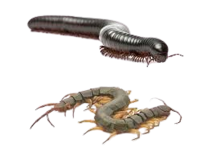

21.
Sobre os miriápodes, qual é a principal diferença entre centopéias e lacraias?

Centopéias têm o corpo achatado
Lacraias são herbívoras, enquanto centopéias são carnívoras
Lacraias têm mais patas que centopéias
Centopéias possuem antenas mais curtas que as lacraias
Todos os direitos reservados © Hamilton, Guilherme, Gabriel e Arthur.
 21.
21.
21.
21.